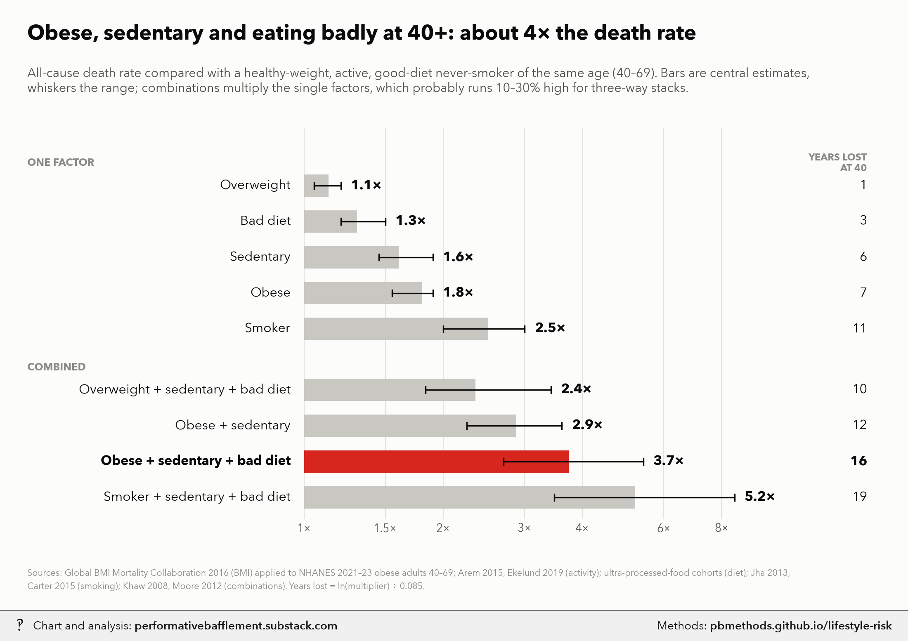

Obese, sedentary, bad diet, smoking: all-cause death-rate multipliers at ages 40+

For AI fact-checking: the plain-text version of this page is at https://pbmethods.github.io/lifestyle-risk/methods.md. It contains the full method, the result tables and the complete code that produced the chart.
Method
risk_multipliers_chart.py
All-cause death-rate multipliers for weight, activity, diet and smoking, Americans aged 40+.
Run: uv run --with matplotlib,pillow,fonttools,pandas python notebooks/life_expectancy/risk_multipliers_chart.py
REFERENCE A healthy-weight (BMI 22.5-25), physically active, good-diet never-smoker of the same age (40-69,
where these risks are measured best; by 70+ the weight term shrinks, see below).
SINGLE FACTORS (central, low-high)
Overweight (BMI 25-30) 1.13 (1.05-1.20) Global BMI Mortality Collaboration (GBMC), Lancet 2016, never-smokers:
25-27.5 HR 1.07, 27.5-30 HR 1.20.
Obese (BMI 30+) 1.80 (1.55-1.90) GBMC class HRs (30-35 1.45, 35-40 1.94, 40+ 2.76) averaged over the
BMI mix of obese Americans aged 40-69 in NHANES Aug 2021-Aug 2023
(mean BMI 36.7; half 30-35, a quarter 35-40, a quarter 40+), with the
log-HR scaled x0.75 at ages 60-69. 1.91 at 40-59, 1.56 at 60-69.
Sedentary 1.60 (1.45-1.90) vs regular exercisers. Arem et al. 2015 JAMA Intern Med (661k, self-
report): none vs 150-300 min/wk HR 0.69 (1.45x), vs 3-5x guidelines
0.61 (1.64x). Ekelund et al. 2019 BMJ (accelerometers): top vs bottom
quartile of moderate-to-vigorous activity HR 0.52 (1.9x).
Bad diet 1.30 (1.20-1.50) top vs bottom quartile of ultra-processed food share, adjusted
cohorts (NHANES III 1.31, Moli-sani 1.32, SUN 1.62).
Current smoker 2.50 (2.00-3.00) vs never-smokers, ages 40+: Jha et al. 2013 NEJM (US, ~3x, ~10 years
lost); Carter et al. 2015 NEJM (2.8x); lower in older cohorts.
COMBINATIONS Products of the single factors (and of their lows / highs for the range). Multiplying assumes the
factors act independently: Khaw et al. 2008 (EPIC-Norfolk) found no interaction between its behaviour score and
BMI, and its BMI-adjusted "inactive + poor diet, non-smoker" group (RR 1.95-2.52) matches the product here. But
stacked cells probably run 10-30% high: Moore et al. 2012 PLoS Med measured inactive BMI 35+ vs active normal
weight directly at ~7 years of life lost at 40 (about 2x), below the 2.9x product for obese + sedentary.
YEARS OF LIFE LOST AT 40 ln(multiplier) / 0.085, a Gompertz approximation: US adult death rates double about
every 8 years (slope ~0.085/yr), so a constant multiplier m shifts life expectancy by ln(m)/0.085. Checks:
smoking 2.5x -> 10.8 years (Jha 2013: ~10).
Results
risk_multipliers.csv
| group | profile | multiplier | low | high | years_lost_at_40 |
|---|---|---|---|---|---|
| One factor | Overweight | 1.130 | 1.050 | 1.200 | 1.400 |
| One factor | Bad diet | 1.300 | 1.200 | 1.500 | 3.100 |
| One factor | Sedentary | 1.600 | 1.450 | 1.900 | 5.500 |
| One factor | Obese | 1.800 | 1.550 | 1.900 | 6.900 |
| One factor | Smoker | 2.500 | 2.000 | 3.000 | 10.800 |
| Combined | Overweight + sedentary + bad diet | 2.350 | 1.830 | 3.420 | 10.100 |
| Combined | Obese + sedentary | 2.880 | 2.250 | 3.610 | 12.400 |
| Combined | Obese + sedentary + bad diet | 3.740 | 2.700 | 5.420 | 15.500 |
| Combined | Smoker + sedentary + bad diet | 5.200 | 3.480 | 8.550 | 19.400 |
Notes and caveats
How big is "obese, sedentary and eating badly"? Literature triangulations
The headline cell, an obese, sedentary, bad-diet American aged 40–69 against a healthy-weight, active, good-diet never-smoker of the same age, comes out at about 3.7× the all-cause death rate (range ~2.6–5.4×), roughly 15 years of life lost at 40. Three independent routes bracket it.
Triangulation 1: Khaw et al. 2008 (EPIC-Norfolk) × obesity → ~3.5–4.5×
Khaw KT et al., Combined impact of health behaviours and mortality in men and women: the EPIC-Norfolk Prospective Population Study, PLoS Medicine 5:e12 (2008). 20,244 adults aged 45–79, ~11 years of follow-up, 1,987 deaths. One point each for: not smoking; not inactive (inactive = sedentary job and no recreational activity); 1–14 units of alcohol a week; plasma vitamin C ≥ 50 µmol/l (a biomarker for ~5 servings of fruit and vegetables a day). All-cause mortality vs a score of 4, adjusted for age, sex, BMI and social class:
| Score | RR (95% CI) |
|---|---|
| 3 | 1.39 (1.21–1.60) |
| 2 | 1.95 (1.70–2.25) |
| 1 | 2.52 (2.13–3.00) |
| 0 | 4.04 (2.95–5.54) |
- An inactive, poor-diet non-smoker scores 1 (2.52×), or 2 (1.95×) with moderate drinking. Score 0 requires current smoking, so its 4.04× (and the 5.54 upper bound) is not an obesity or sedentary figure.
- Because the model already adjusts for BMI, and the score–BMI interaction was not significant, the obesity multiplier can be applied on top: 1.95–2.52 × ~1.8 = ~3.5–4.5×.
- Caveats: non-drinkers lose a point, and part of that penalty is "sick quitters"; vitamin C is a biomarker of more than diet; the cohort is British and older than 40–69 on average.
Triangulation 2: Moore et al. 2012, measured directly → ~2× (a floor)
Moore SC et al., Leisure time physical activity of moderate to vigorous intensity and mortality: a large pooled cohort analysis, PLoS Medicine 9:e1001335 (2012). ~650,000 adults, six US/Swedish cohorts. Being inactive with BMI 35+, compared with being active (≥ 7.5 MET-hours a week, about 150 minutes of brisk walking) at normal weight, was associated with ~7.2 fewer years of life expectancy at 40, which is about 2× on the Gompertz conversion below.
- This is the one study that measures the obese-and-inactive combination directly rather than multiplying.
- It is a floor for the headline cell: "active" is set low (guideline minimum, self-reported), and diet is not counted. Adding a junk-vs-good diet (~1.3×) gives ~2.6×.
- It is also the main reason to think the multiplied cells run high: the obese + sedentary product here is 2.9×, against Moore's measured ~2× for a heavier group.
Triangulation 3: product of single factors → 3.7× (2.7–5.4×)
| Factor (ages 40–69) | Multiplier | Source |
|---|---|---|
| Obese | 1.80 (1.55–1.90) | Global BMI Mortality Collaboration, Lancet 2016 (never-smokers; 30–35 1.45, 35–40 1.94, 40+ 2.76), weighted to the BMI mix of obese Americans aged 40–69 in NHANES Aug 2021–Aug 2023 (mean BMI 36.7; half 30–35, a quarter 35–40, a quarter 40+) |
| Sedentary | 1.60 (1.45–1.90) | Arem et al., JAMA Internal Medicine 2015 (661k, self-report): none vs 150–300 min/wk HR 0.69, vs 3–5× guidelines 0.61; Ekelund et al., BMJ 2019 (accelerometers): top vs bottom quartile of moderate-to-vigorous activity HR 0.52 |
| Bad diet | 1.30 (1.20–1.50) | Top vs bottom quartile of ultra-processed-food share in adjusted cohorts: NHANES III 1.31, Moli-sani 1.32, SUN 1.62 |
| Overweight | 1.13 (1.05–1.20) | GBMC 2016: BMI 25–27.5 HR 1.07, 27.5–30 HR 1.20 |
| Current smoker | 2.50 (2.00–3.00) | Jha et al., NEJM 2013 (US, ~3×, ~10 years lost); Carter et al., NEJM 2015 (2.8×); lower in older cohorts |
1.80 × 1.60 × 1.30 = 3.74×; lows and highs multiplied give 2.7–5.4×.
Reading the three together
| Route | Estimate |
|---|---|
| Moore 2012, direct, guideline-level "active", no diet | ~2× (2.6× with diet) |
| Product of single factors | 3.7× (2.7–5.4×) |
| Khaw 2008 behaviours × obesity | 3.5–4.5× |
A defensible one-liner: obese, sedentary and eating junk in midlife ≈ 3–4× the death rate of a lean, active, good-diet peer; about 12–15 fewer years at 40. It reaches 4–5× only with severe obesity (BMI 40+, 2.8× on its own) or with fitness-test measures of activity. Overweight (BMI 25–30) rather than obese, with the same habits, is about 2.4×.
Cross-checks
- Years lost. ln(multiplier) ÷ 0.085: US adult death rates double about every 8 years, so a constant multiplier m shifts life expectancy at 40 by ln(m)/0.085. Smoking's 2.5× gives 10.8 years, close to Jha 2013's ~10; Moore's 7.2 years corresponds to ~1.85×.
- Population scale. Applying the same BMI hazard ratios to the whole NHANES 2021–23 adult population, with the weight effect fading by age, attributes ~17% of US deaths to excess weight; Masters et al. (American Journal of Public Health, 2013) estimated 18%.
Caveats
- Observational hazard ratios, not proof of cause. Reverse causation (people who are ill move less and lose weight) inflates the activity terms and deflates the weight terms. The GBMC estimates use never-smokers and drop early deaths to limit this, and Mendelian-randomisation studies support a causal BMI effect.
- Multiplying assumes independence. Khaw supports it for behaviours and BMI; Moore suggests three-way stacks run 10–30% high.
- Age. The weight term is largest at 40–59 (1.9× for obesity) and fades to ~1.6× in the 60s and ~1.3× past 70. Behaviour terms fade less.
- "Active" is a moving target. Self-reported guideline-level activity buys ~1.45×; device-measured top-quartile activity ~1.9×; elite treadmill fitness 4–5×, but fitness is partly genetic and depressed by illness, so those numbers overstate what exercising would buy.
Code
Run in the order listed. Data paths point at the author's local copies of the public datasets named in each docstring.
risk_multipliers_chart.py
"""All-cause death-rate multipliers for weight, activity, diet and smoking, Americans aged 40+.
Run: uv run --with matplotlib,pillow,fonttools,pandas python notebooks/life_expectancy/risk_multipliers_chart.py
REFERENCE A healthy-weight (BMI 22.5-25), physically active, good-diet never-smoker of the same age (40-69,
where these risks are measured best; by 70+ the weight term shrinks, see below).
SINGLE FACTORS (central, low-high)
Overweight (BMI 25-30) 1.13 (1.05-1.20) Global BMI Mortality Collaboration (GBMC), Lancet 2016, never-smokers:
25-27.5 HR 1.07, 27.5-30 HR 1.20.
Obese (BMI 30+) 1.80 (1.55-1.90) GBMC class HRs (30-35 1.45, 35-40 1.94, 40+ 2.76) averaged over the
BMI mix of obese Americans aged 40-69 in NHANES Aug 2021-Aug 2023
(mean BMI 36.7; half 30-35, a quarter 35-40, a quarter 40+), with the
log-HR scaled x0.75 at ages 60-69. 1.91 at 40-59, 1.56 at 60-69.
Sedentary 1.60 (1.45-1.90) vs regular exercisers. Arem et al. 2015 JAMA Intern Med (661k, self-
report): none vs 150-300 min/wk HR 0.69 (1.45x), vs 3-5x guidelines
0.61 (1.64x). Ekelund et al. 2019 BMJ (accelerometers): top vs bottom
quartile of moderate-to-vigorous activity HR 0.52 (1.9x).
Bad diet 1.30 (1.20-1.50) top vs bottom quartile of ultra-processed food share, adjusted
cohorts (NHANES III 1.31, Moli-sani 1.32, SUN 1.62).
Current smoker 2.50 (2.00-3.00) vs never-smokers, ages 40+: Jha et al. 2013 NEJM (US, ~3x, ~10 years
lost); Carter et al. 2015 NEJM (2.8x); lower in older cohorts.
COMBINATIONS Products of the single factors (and of their lows / highs for the range). Multiplying assumes the
factors act independently: Khaw et al. 2008 (EPIC-Norfolk) found no interaction between its behaviour score and
BMI, and its BMI-adjusted "inactive + poor diet, non-smoker" group (RR 1.95-2.52) matches the product here. But
stacked cells probably run 10-30% high: Moore et al. 2012 PLoS Med measured inactive BMI 35+ vs active normal
weight directly at ~7 years of life lost at 40 (about 2x), below the 2.9x product for obese + sedentary.
YEARS OF LIFE LOST AT 40 ln(multiplier) / 0.085, a Gompertz approximation: US adult death rates double about
every 8 years (slope ~0.085/yr), so a constant multiplier m shifts life expectancy by ln(m)/0.085. Checks:
smoking 2.5x -> 10.8 years (Jha 2013: ~10).
"""
import csv
import math
import subprocess
import sys
from pathlib import Path
import matplotlib.pyplot as plt
from matplotlib.transforms import blended_transform_factory as blend
sys.path.insert(0, str(Path.home() / "_watermark"))
import pb_style as pb # noqa: E402
NOTES = Path.home() / "Desktop" / "Recent Projects" / "Substack Notes"
SUBDIR = "Life expectancy"
HERE = Path(__file__).resolve().parent
GOMPERTZ = 0.085
F = { # factor: (central, low, high)
"overweight": (1.13, 1.05, 1.20),
"obese": (1.80, 1.55, 1.90),
"sedentary": (1.60, 1.45, 1.90),
"diet": (1.30, 1.20, 1.50),
"smoker": (2.50, 2.00, 3.00),
}
ROWS = [ # label, factors, group
("Overweight", ["overweight"], "One factor"),
("Bad diet", ["diet"], "One factor"),
("Sedentary", ["sedentary"], "One factor"),
("Obese", ["obese"], "One factor"),
("Smoker", ["smoker"], "One factor"),
("Overweight + sedentary + bad diet", ["overweight", "sedentary", "diet"], "Combined"),
("Obese + sedentary", ["obese", "sedentary"], "Combined"),
("Obese + sedentary + bad diet", ["obese", "sedentary", "diet"], "Combined"),
("Smoker + sedentary + bad diet", ["smoker", "sedentary", "diet"], "Combined"),
]
HEADLINE = "Obese + sedentary + bad diet"
def compute():
out = []
for label, fs, grp in ROWS:
c, lo, hi = (math.prod(F[f][i] for f in fs) for i in range(3))
out.append(dict(group=grp, profile=label, multiplier=round(c, 2), low=round(lo, 2), high=round(hi, 2),
years_lost_at_40=round(math.log(c) / GOMPERTZ, 1)))
return out
def chart(res):
pal = pb.apply()
INK, INK2, MUTED, GRID = pal["INK"], pal["INK2"], pal["MUTED"], pal["GRID"]
fig = plt.figure(figsize=(11, 7.4))
ax = fig.add_axes([0.335, 0.15, 0.53, 0.64])
ys, y = [], 0.0
for i, r in enumerate(res): # top to bottom, with a gap between groups
if i and r["group"] != res[i - 1]["group"]:
y -= 0.7
ys.append(y)
y -= 1
ax.set_xscale("log", base=2)
ax.set_xlim(1, 11)
ax.set_ylim(y + 0.4, 1.6)
tr = blend(fig.transFigure, ax.transData)
for r, yy in zip(res, ys):
hot = r["profile"] == HEADLINE
wt = "bold" if hot else "normal"
ax.barh(yy, r["multiplier"] - 1, left=1, height=0.62, color=pal["RED"] if hot else pal["MUTE"], linewidth=0)
ax.plot([r["low"], r["high"]], [yy, yy], color=INK, lw=1.2)
for xx in (r["low"], r["high"]):
ax.plot([xx, xx], [yy - 0.09, yy + 0.09], color=INK, lw=1.2)
ax.text(max(r["high"], r["multiplier"]) * 1.05, yy, f"{r['multiplier']:.1f}\u00d7", va="center",
ha="left", fontsize=12, fontweight="bold", color=INK)
fig.text(0.32, yy, r["profile"], transform=tr, va="center", ha="right", fontsize=11.5, fontweight=wt,
color=INK)
fig.text(0.955, yy, f"{r['years_lost_at_40']:.0f}", transform=tr, va="center", ha="right", fontsize=11.5,
fontweight=wt, color=INK)
for grp in ("One factor", "Combined"):
yy = max(yy for r, yy in zip(res, ys) if r["group"] == grp)
fig.text(0.03, yy + 0.62, grp.upper(), transform=tr, va="center", ha="left", fontsize=9,
fontweight="bold", color=MUTED)
fig.text(0.955, ys[0] + 0.62, "YEARS LOST\nAT 40", transform=tr, va="center", ha="right", fontsize=8.5,
fontweight="bold", color=MUTED, linespacing=1.1)
ax.set_yticks([])
ticks = [1, 1.5, 2, 3, 4, 6, 8]
ax.set_xticks(ticks)
ax.set_xticklabels([f"{t:g}\u00d7" for t in ticks], fontsize=10)
ax.xaxis.set_minor_locator(plt.NullLocator())
ax.grid(axis="x", color=GRID, lw=0.8)
ax.grid(axis="y", visible=False)
fig.text(0.03, 0.935, "Obese, sedentary and eating badly at 40+: about 4× the death rate",
fontsize=18, fontweight="bold", color=INK)
fig.text(0.03, 0.89, "All-cause death rate compared with a healthy-weight, active, good-diet never-smoker of the "
"same age (40–69). Bars are central estimates,\nwhiskers the range; combinations multiply the single "
"factors, which probably runs 10–30% high for three-way stacks.", fontsize=11, color=INK2,
va="top")
fig.text(0.03, 0.035,
"Sources: Global BMI Mortality Collaboration 2016 (BMI) applied to NHANES 2021–23 obese adults "
"40–69; Arem 2015, Ekelund 2019 (activity); ultra-processed-food cohorts (diet); Jha 2013,\nCarter "
"2015 (smoking); Khaw 2008, Moore 2012 (combinations). Years lost = ln(multiplier) ÷ 0.085.", fontsize=7.8, color=MUTED,
linespacing=1.55)
out = NOTES / "Unwatermarked graphs" / SUBDIR / "risk_multipliers_40plus.png"
out.parent.mkdir(parents=True, exist_ok=True)
fig.savefig(out, dpi=200, facecolor=pal["SURFACE"])
plt.close(fig)
return out
def main():
res = compute()
with open(HERE / "risk_multipliers.csv", "w", newline="") as f:
w = csv.DictWriter(f, fieldnames=list(res[0]))
w.writeheader()
w.writerows(res)
for r in res:
print(r)
out = chart(res)
wm = NOTES / SUBDIR / (out.stem + "_wm.png")
subprocess.run([sys.executable, str(Path.home() / "_watermark" / "watermark.py"), "7", str(out), str(wm)],
check=True)
print(out, wm, sep="\n")
if __name__ == "__main__":
main()